Naive Bayes is another useful tool that falls under the umbrella of supervised machine learning. Vectors of data (both numeric or qualitative) are predicted to be part of a particular class (or label) based on the conditional probabilities of each specific feature value being a part of that class. The method relies on the conditional probability formula:

This formula can be extended for multiple variables.

For qualitative data, this process is easy as it simply calculates the probability of that value occurring. For numeric data, the process is slightly more complex. Instead of treating numeric values as distinct (such as treating 35% and 45% as different fg %) naive bayes classifiers calculate the probability of that value within the distribution of that variable (assuming that variable is normally distributed). This is known as the probability distribution function and the formula is below:

With the conditional probabilities calculated for each label/class, the values are compared and the label with the highest probability is what the vector is assigned to.
One other note about Naive Bayes is the issue of zero probability. When calculating the probability of a vector belonging to a specific class using the multivariable equation above, the entire expression goes to 0 if a single one of the conditional probabilities equals zero as they are all multiplied together. This poses a major issue. However, the solution is a form of smoothing known as Laplace smoothing. The method is simple: calculate the conditional probability like normal and then add 1 (or whatever constant the programmer chooses) and divide by the number of classes/labels in the data. For a 2 class problem, this would mean that a variable with conditional probability of 0 is now represented as .5.
Formatting the text data into a usable form for Naive Bayes analysis made use of the data that was employed in Decision Tree analysis. As a reminder,The goal of the text data analysis throughout the project has been to use twitter to find out what it means, in a cultural sense, to be a star, with the hopes of using that information to augment the salary analysis. As a result, for the Naive Bayes analysis, the goal was to identify words that are the most unique identifiers for the different types of stardom in the nba based on the three clusters revealed in the clustering analysis which were 1) star 2) MVP and 3) allstar, legend, and superstar. Naive Bayes requires labels and a document term matrix to be analyzable by computers. Thus, the approach was to pull a balanced subset of the text data (1000 tweets from each label), treat each tweet as its own unique vector, and run the Naive Bayes Multinomial classifier to try and classify a tweet into its class solely using the words in that tweet (minus the search terms).
Before running Naive Bayes on the normalized text data that has been used for the Decision Tree analysis, it is good practice to examine the labels themselves to see what is expected.
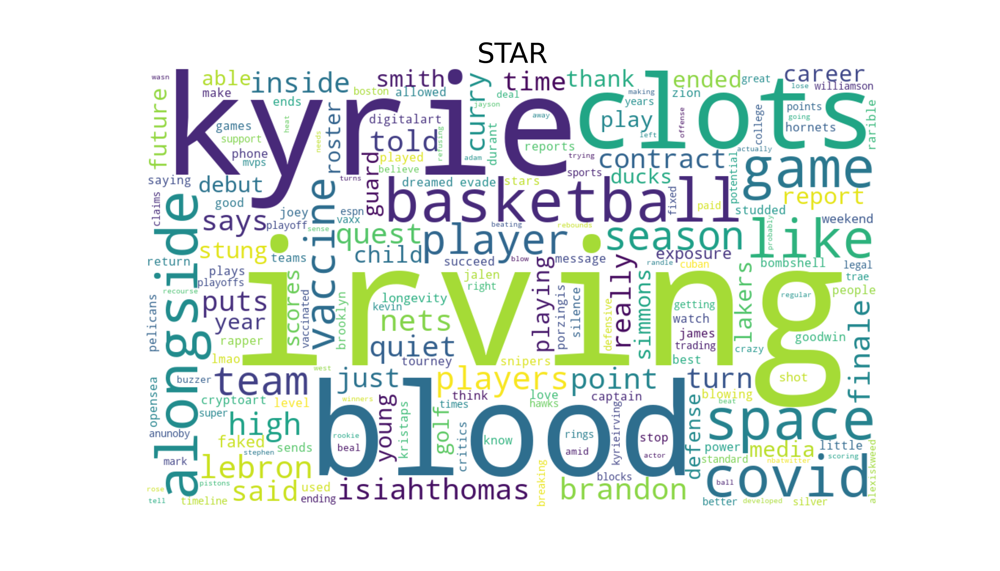 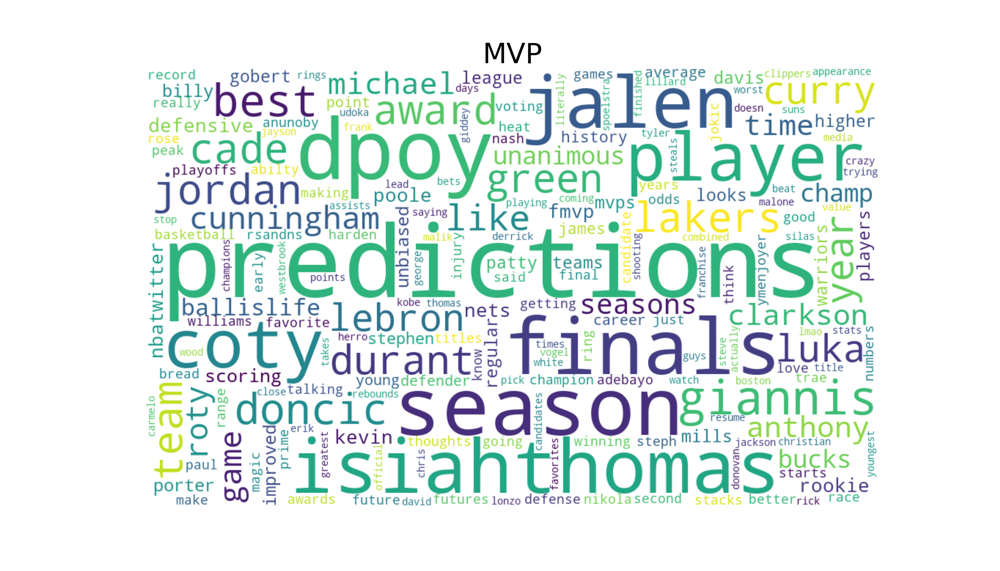 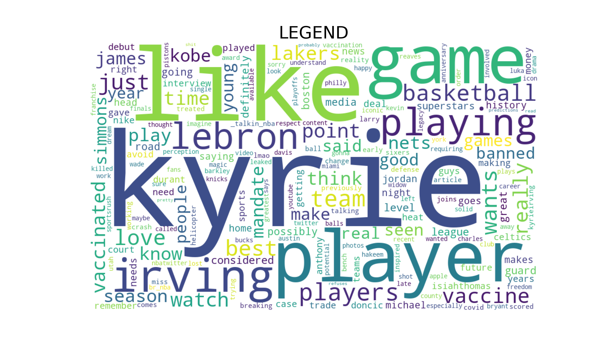Here the differences in the labels become visible. The star label is full of vaccine and covid related issues, specifically involving Kyrie Irving. There are also some names of stars as well. The MVP label is filled with discussion regarding potential picks for the respective honors like rookie Jalen Green and veterans Luka Doncic, LeBron, and others. There are also mentions of other season long award. Lastly, the legend cluster search contains names of legends as well as teams with NBA legends like the Lakers, Celtics, and Jazz. Now onto Naive Bayes analysis.
The model relies on calculating the conditional probabilities of words showing up for specific labels, assigning the predicted vector to the label it has the highest probability of belonging to based on the train set. For this model, an 80/20 train/test split was used. To make sure the labels are balanced, a quick bar graph was created.
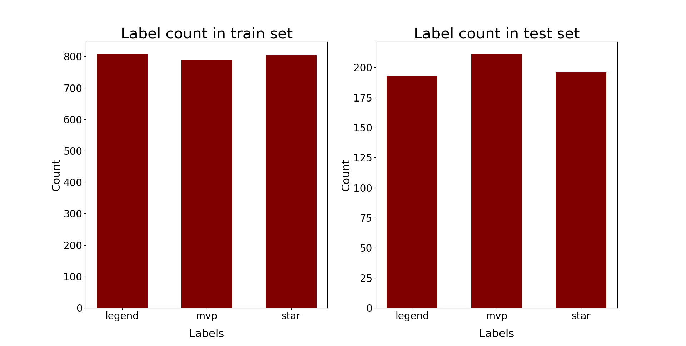With the balanced labels, the Naive Bayes model is trained on the train data with the labels. Then the test data is fed in and labels are predicted based on the model which are then compared against the actual test set labels. The accuracy for this model was an impressive 65%, a dramatic improvement over the 53% found used in decision tree analysis. Below is the confusion matrix and summary tables. One other improvement is the predictability of each of the three labels all being above 50%, if this model only did as well as chance would predict, the accuracy would be 1/3 or 33%.
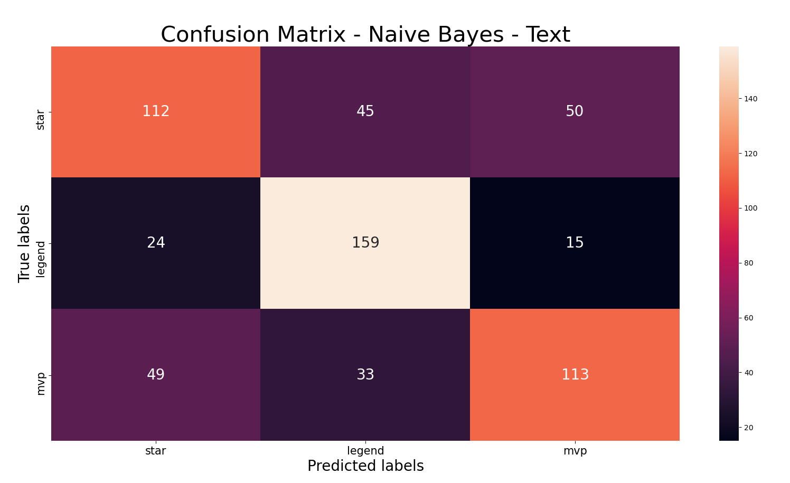Given the relatively solid accuracy, the next step is to check which words played the largest role in helping predict each label. This can be found through the log probability attribute that sklearn's MultinomalNB() class function contains. It returns the log probability of the words given a specific class. Since the probabilities are all between [0,1] all of the log probabilities are negative. A smaller negative indicates a higher probability. With that being said, the following plot represents the highest probability words (from bottom to top) for each label.
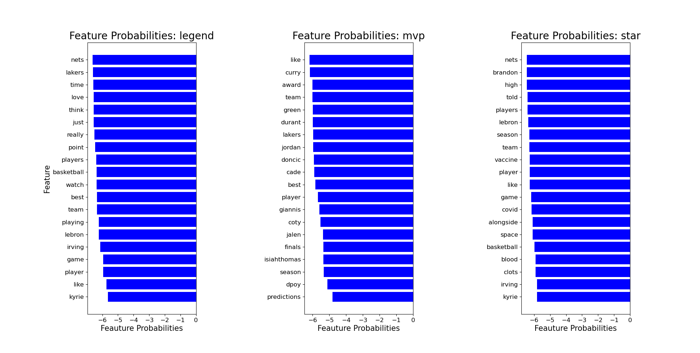Some notable words most likely to belong to the legends label are the team names of "nets" and "lakers", "time", and player names like "kyrie" and "LeBron". These reflect a couple of dimensions, namely superstar players, teams with legends/future legends, and the concept of time being intimately connected to the notion of the collection of legends, superstars, and allstars. The MVP words of note are "award","finals","predictions", and a collection of player names that are MVP candidates reflecting the annual nature of the award. Lastly, the star words of note are "covid", "vaccine", and "kyrie" reflecting the public discourse regarding nba stars and vaccine controversies such as the one involving Kyrie Irving.
The code used for the creation of the wordclouds, label graphs, running of the model, and the confusion matrix is linked here.
The Record Data used for Naive Bayes analysis in R is the same data used for Decision Trees. One difference between this analysis and the past models is the inclusion of teams as a column and position. These variables have previously been removed due to being non-numeric. However, Naive Bayes allows for both numeric and non-numeric data to be used to find any potential differences between teams and positions. Two different Naive Bayes models were created, one with feature selection and one without. First, the model without feature selection will be examined. An 80/20 train/test split was used. To ensure balanced data, the label counts in the train and test sets are compared to that of the data as a whole.
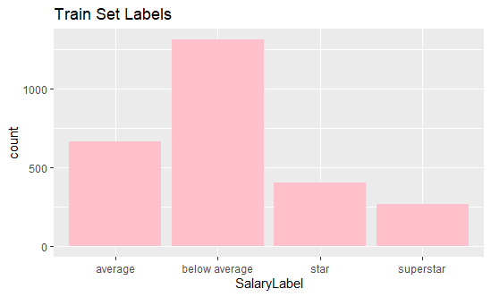 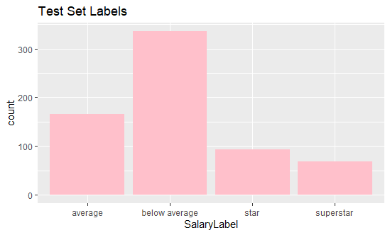 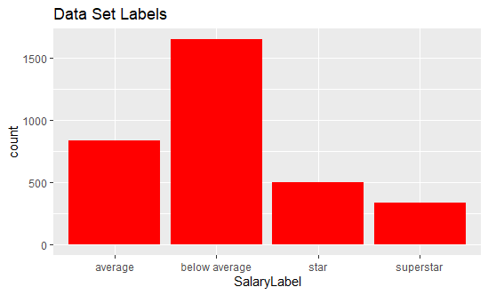The data labels are very much in line with the dataset as a whole.
Now, the Label and Salary columns must be removed and the naive bayes model can be run (using a laplace smoothing value of 1) using the e1071 library. The outputs of the model include a table of mean and variance values for each of the labels for each variable:
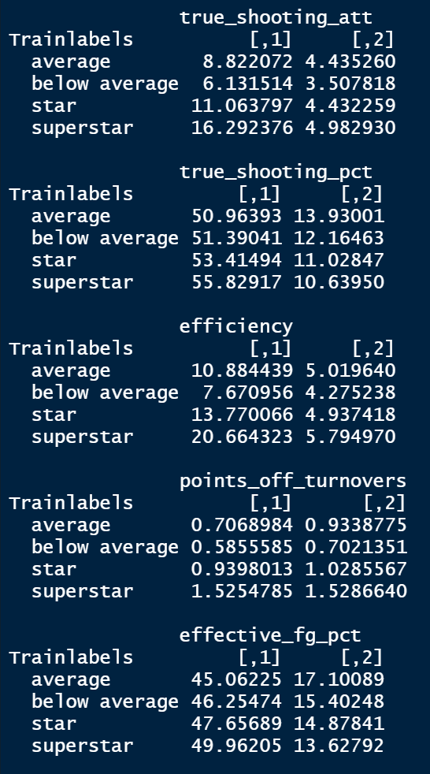Using this table, some key variables can be identified. The more significant differences in this image can be seen in true shooting attempts and efficiency but not in the other 3. This is how the variables were selected for the feature selected naive bayes model discussed below. For this more general model, the accuracy was nearly 62% and the confusion matrix and summary tables are shown below:
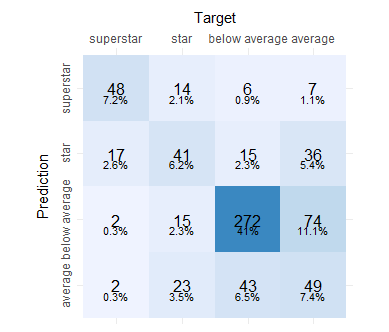As stated before, new to the analysis this time was the inclusion of team name and positions. To take a look at any findings, the table of mean values for these values are below:
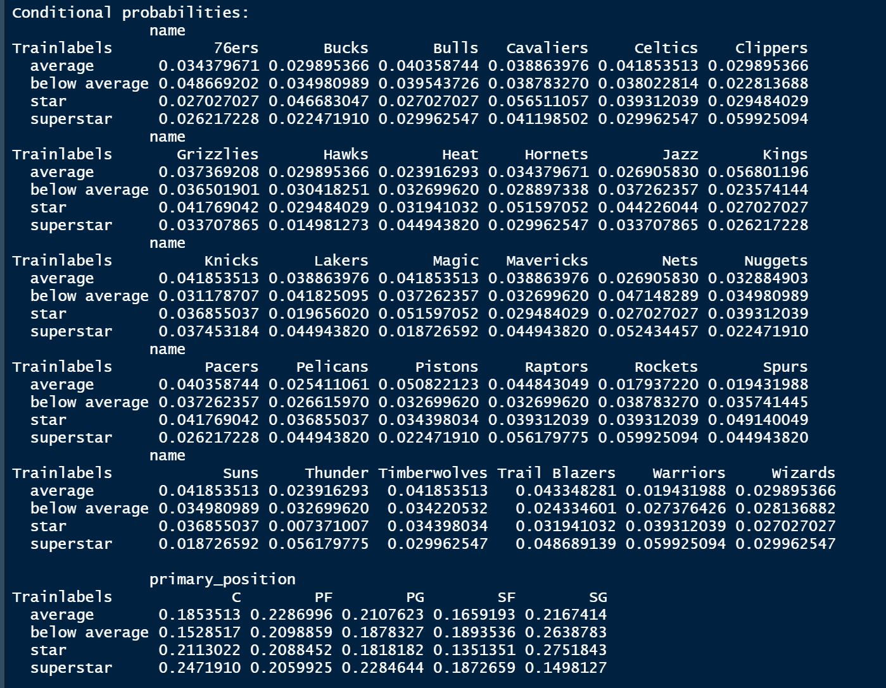Starting with teams, there are some that seem to take different approaches to roster construction. Teams like the Clippers, Nets, Raptors, Rockets, and Warriors have the highest concentration of stars on their teams over these years while the Hawks, Magic, and Suns have the least. Also, teams like the Nuggets and Jazz seem to have more balanced roster construction with even amounts of players from multiple tiers. With regard to positions, a noteworthy aspect is the relatively high likelihood of superstar centers and low likelihood of shooting guard superstars.
The feature selected model relied on the table returned by the first naive bayes model. To select the features, only the ones with clear significant mean differences were selected, plus the inclusion of variables like team and position that seemed to improve the accuracy of the model on the margins. The feature selected model removed 6 variables: games played, assist to TO ratio, points off TO, steals, height, weight, and effective fg% and true shooting%. With the remaining 16 features the naive bayes model's accuracy increased to nearly 65%, a small but meaningful difference. The outputs are below:
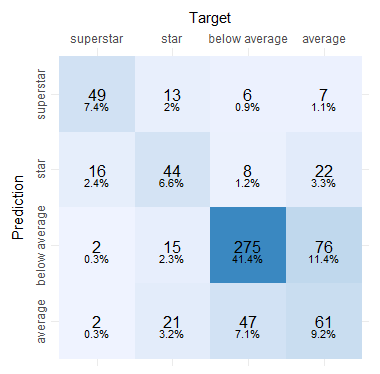 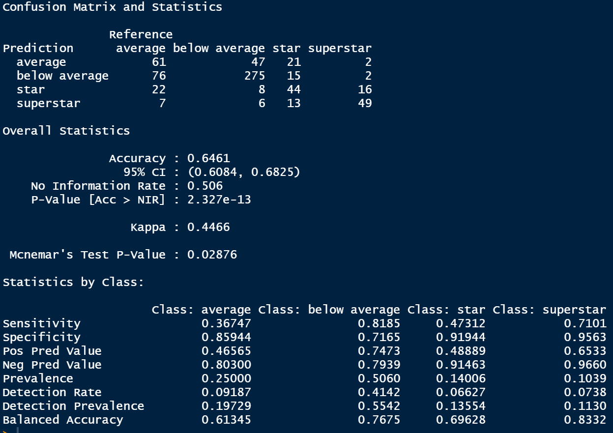The code used for both naive bayes models, plotting of the labels, and confusion matrices is linked here.
Regarding the text data, trends that began to form with prior analytical models are showing up again. The legend, allstar, superstar cluster continues to contain the most relevant information regarding lasting stardom. With the Naive Bayes model, words reflecting time dimensions and enduring aspects of the game like stud players and the teams they played for were what helped the model distinguish what tweets do and do not belong to this category. The fact that "time" is once again a major word of importance indicates the real association between true stardom and consistency of performance over time. The star category is one that is dominated by current discourse, specifically COVID-19 related discourse. It is cool to see the model pick up this dimension of this bundle of tweets, but for salary analysis there is not much to bite into. Lastly, the MVP category is almost the opposite of the legend cluster in that it is heavily focused on the current year and projecting current performances over the duration of a season. This displays a nice counterpoint to the takeaway provided by the legend cluster. True stardom comes from performance over time, but any given year can belong to any player. Usually there is some overlap (as seen in the overlap of relevant names to both labels like "LeBron") but there are two distinct yet mutually supportive elements of NBA stardom.
The Naive Bayes record data analysis provided some interesting takeaways. This was the first model looking at teams and positions. Interestingly, teams with the highest likelihoods of having superstars on their roster over this period like the Clippers, Nets, Rockets, and Warriors are large market teams and also teams that have experienced success over the 2013-2020 period. On the flip side, teams with less superstars like the Hawks, Magic, and Suns have performed quite poorly. It is not necessarily surprising to see an association between teams with superstars and teams who have succeeded (and vice versa), but it does indicate the pressing need to get a superstar to experience success. Additionally, the Center position seems to have a higher proportion of superstars then the others, particularly interesting given the shift to small ball and three point shooting in the NBA. Perhaps it is because of the lower need for Centers that those who do get rostered are particularly good and thus command high salaries.